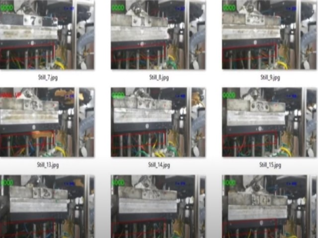
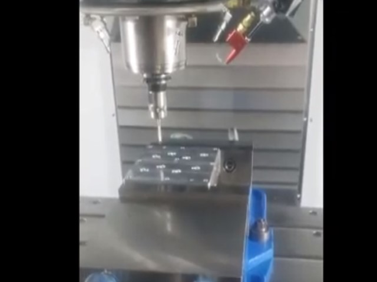

Private Apps
These apps are in a private area, not for public viewing. You should be here by invitation only. Everything here is for demonstration purposes and should not be shared. Please respect this.
Mobile Phone as Computer Vision
Overview of using mobile phone for computer vision. Short video showing the computer vision at work

Mobile Phone as Computer Vision Longer Video
Longer video of computer vision with detailed calulations, reports, and stills. The stills with markups is shown.

Haas CNC as CMM
Normally Hass CNC machines are normally used for machining. I found a way to embedd CMM into GCode then wrote app to do embedding.
Connect with Me